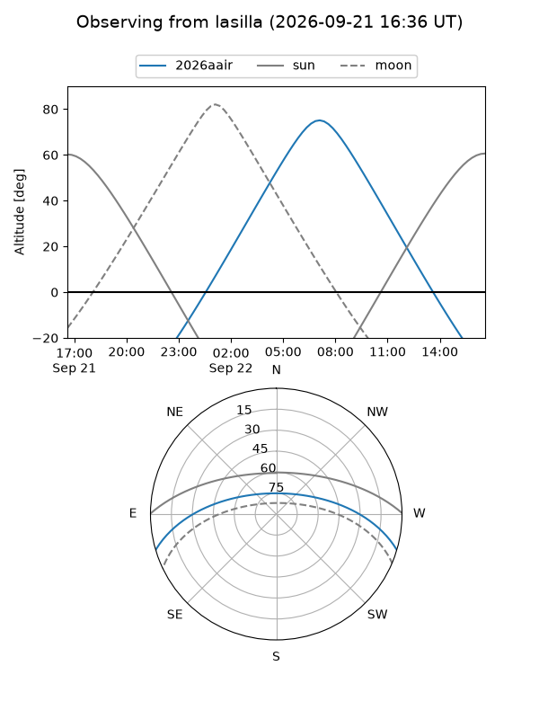
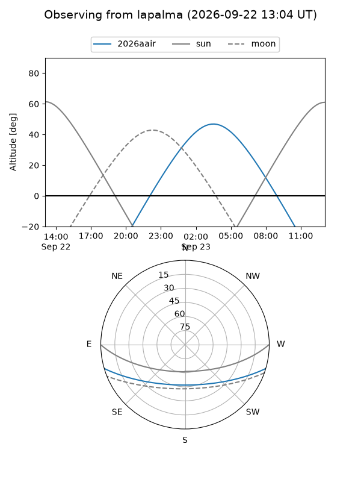
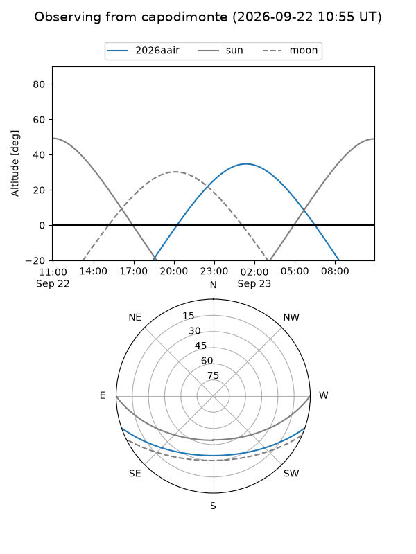
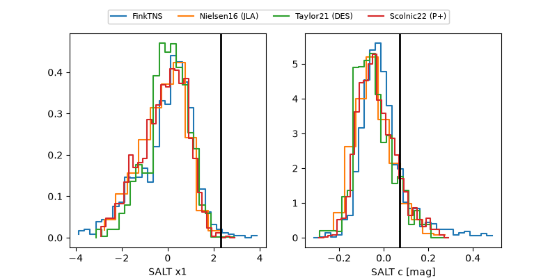

2026aair
Target 2026aair at 2026-09-22 14:15
Aliases and brokers:
FINK-ZTF: ztf.fink-portal.org/ZTF26abrufau
Lasair-ZTF: lasair-ztf.lsst.ac.uk/objects/ZTF26abrufau
ALeRCE-ZTF: alerce.online/object/ZTF26abrufau
YSE-PZ: ziggy.ucolick.org/yse/transient_detail/2026aair
TNS name: wis-tns.org/object/2026aair
Direct TNS query: direct search
alt names
ZTF26abrufau (ztf,fink_ztf)
2026aair (tns,yse)
Coordinates:
equatorial (ra, dec) = 36.3265,-14.50652
equatorial (HMS+DMS) = 02:25:18.36,-14:30:23.47
galactic (l, b) = (187.6606,-64.76535)
Flags:
TNS type: nan
peak dt: +14.3
Photometry:
last atlasc=19.54, ztfg=20.15, ztfr=19.90
1 atlasc, 7 ztfg, 7 ztfr detections
Lightcurve
Visibility



Additional plots
